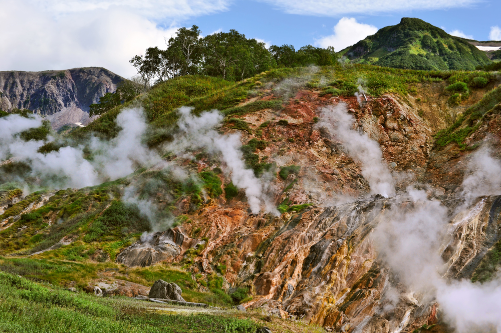

«Одного поля воды»
Гейзерная площадка Евразии
Мировую известность Долине принесли десятки гейзеров, фумарол, термальных источников и озер. В мире еще четыре подобных гейзерных площадки: это Долина (остров Исландия), Йеллоустоун (штат Вайоминг, США), Северный остров (Новая Зеландия) и Эль-Татио (пустыня Атакама, Чили). Камчатская Долина гейзеров — единственная гейзерная площадка в Евразии.
Она находится в 180 километрах на север от Петропавловска-Камчатского у подножия вулкана Кихпиныч в пределах Восточного вулканического пояса. Это ущелье шириной до 4 км, глубиной 400 м и длиной 8 км, по которому протекает река Гейзерная. На протяжении 6 км от устья реки здесь «работают» более 40 гейзеров и термальных источников. Самые крупные из них — Великан и Грот, они выбрасывают до 60 тонн кипятка.
Сенсационное открытие
Долина стала символом Кроноцкого заповедника, где она расположена и для многих эти объекты синонимы, но это не так. Она была открыта уже после образования заповедника в 1941 году геологом Татьяной Устиновой и проводником-ительменом Анисифором Крупениным. На собачьей упряжке они поехали искать место, куда вытекает вода из кальдеры вулкана Узон. Остановились на берегу неизвестного притока реки Шумная в узком проходе между скалами, чтобы немного отдохнуть. На противоположном берегу реки виднелась протаявшая каменистая площадка, над которой вился легкий пар. Внезапно из этой проталины ударила фонтаном струя горячей воды. «Гейзер!» — воскликнула не веря самой себе Устинова. Позже она назвала его Первенцем. До этого момента гейзерные поля были известны только на других континентах. Летом 1941 года Татьяна Ивановна завершила обследование долины и дала название двум десяткам крупных гейзеров и термальных источников.
-

Фотоальбом
С началом Великой Отечественной войны про гейзеры забыли на четыре года. Но после Татьяна Устинова провела полное обследование каньона, описала гейзеры, составила карту термальных полей.
Капризы природы
Уникальный ландшафт долины не раз испытывал на себе удары стихий. 4 октября 1981 года тайфун «Эльза», который пронесся над Камчаткой, вызвал обильные дожди, что привело к повышению уровня воды в реке Гейзерной на несколько метров. Грязевой поток, как скорлупки, подхватывал трехметровые валуны и камни и тащил их по ущелью, снося все на своем пути. В результате исчезли многие гейзеры. Получил серьезные повреждения источник Малахитовый Грот.
3 июня 2007 года гигантский селевой поток из смеси воды, снега, глыб пронесся по Долине гейзеров со скоростью 35–40 км/ч, по пути сметая деревья и кусты. Он рухнул в реку Гейзерная и скатился по ее долине вплоть до устья. Он уничтожил и затопил половину гейзеров и навсегда изменил вид знаменитого каньона. Были разрушены базальтовые скалы Ворота, сильные повреждения получила гейзеритовая постройка источника Малахитовый Грот. Однако благодаря оползню на карте заповедника появилось новое Гейзерное озеро, обнажились участки изумительной разноцветной земли — сочетание голубой и красной глины. За последние годы проснулись некоторые из засыпанных оползневыми массами гейзеров.
Парящая земля
Сегодня долина демонстрирует посетителям термальные поля, цветные глиняные котлы, грязевые вулканы, пароводяные фонтаны извергающихся гейзеров, многочисленные брызжущие и шумящие фонтанчики кипящих источников и небольших гейзеров, ручейки и водопады, и все это на фоне уникального горного ландшафта.
У каждого гейзера своя периодичность и свой характер извержения. Экскурсоводы знают их «график работы» и в нужное время подводят группу к нужную гейзеру, поэтому при посещении долины складывается ощущение, что вы присутствуете на четко отрепетированном шоу с дорогими спецэффектами. Однако это ощущение быстро развеивается, стоит только на представление заглянуть коренному жителю, медведю, который никогда не ведет себя по сценарию. Именно поэтому категорически запрещено сворачивать с настильных троп и передвигаться по ним в одиночку и без фальшфейера.
Всемирное наследие
Попасть в долину туристы могут только вертолетом. После часового перелета над лавовыми полями и конусами вулканов, Ми-8 подлетает к каньону, из которого валит пар. Долина открывается внезапно вся как на ладони. Можно увидеть изогнутую дугу реки Гейзерная, озеро и сопящие «ноздри» ущелья. Вертолет ныряет вниз и садится возле домика инспекторов на том месте, где в 2007 году остановился оползень. Трудно поверить, но в тот самый момент вертолет только высадил очередную группу туристов, которые спустились в каньон и ничего не слышали, а когда поднялись, увидели уже изуродованный ландшафт. Чтобы взлететь, людям пришлось рубить ветки деревьев, зацепившиеся за вертолет. Повезло находившимся в домике инспекторам, ведь селевой поток остановился в метре от дома, стоящего на краю ущелья.
Сегодня анимационную картину оползня можно увидеть как на экспозиции в самой долине, так и на сайте Кроноцкого заповедника. Там же можно взглянуть на самую известную достопримечательность страны через глазок веб-камеры или изучить виртуальную 3D-модель. Но все-таки лучше один раз увидеть это живьем, чем сто раз в интернете, потому что никакой экран не передаст все величие нашей Камчатки и самой главной природной достопримечательности нашей страны, которая к тому же является частью объекта Всемирного наследия ЮНЕСКО «Вулканы Камчатки».